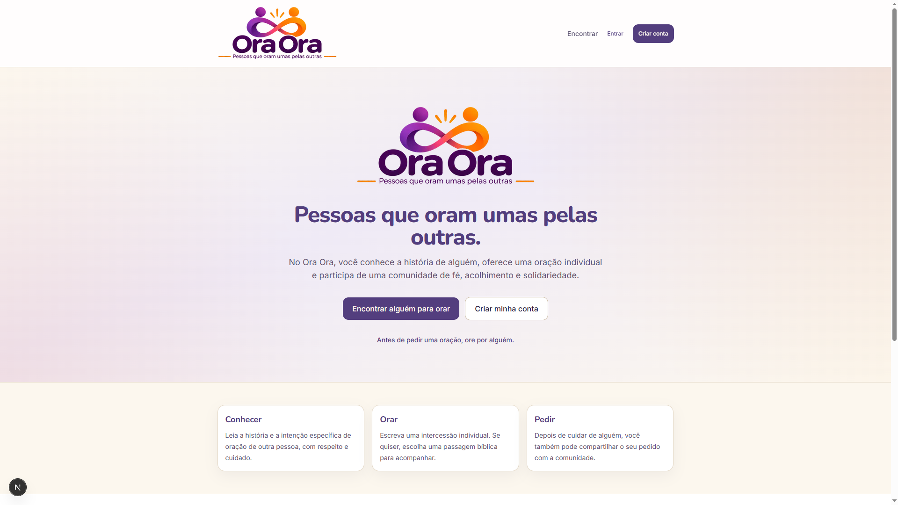
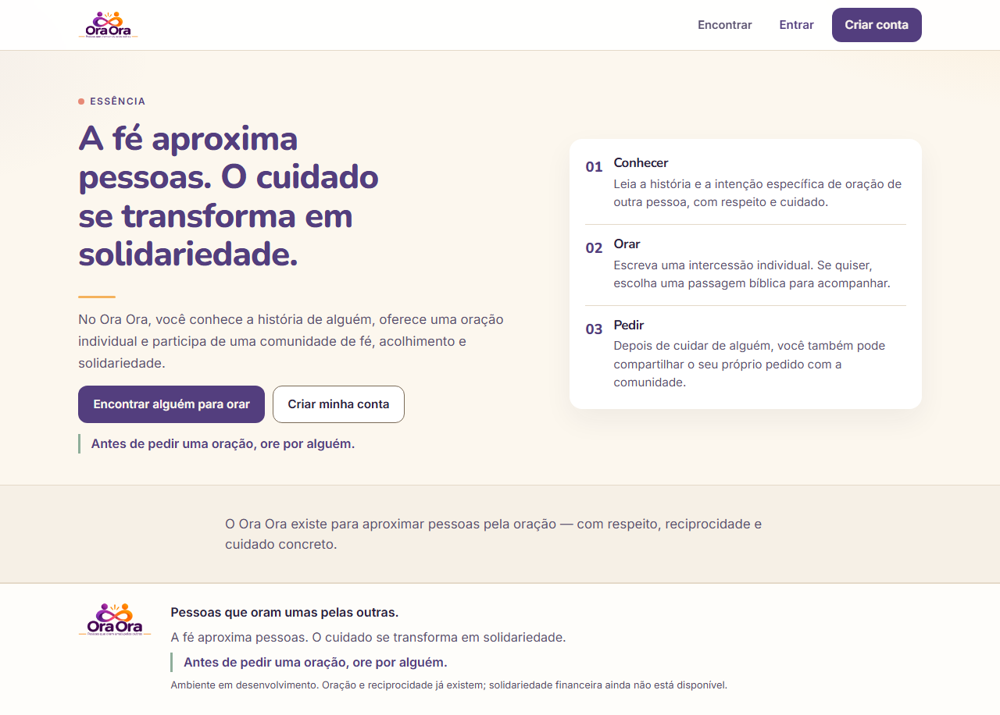
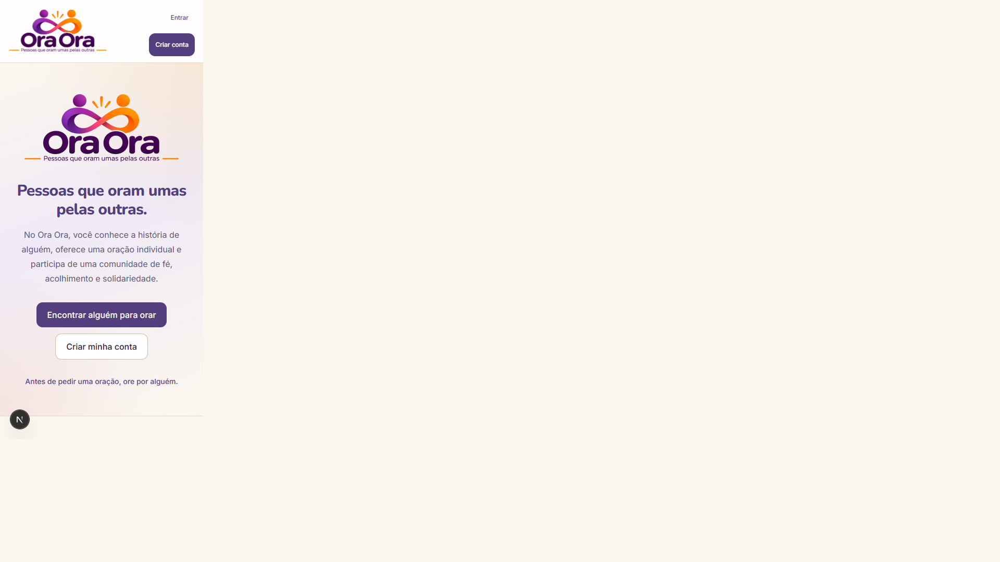
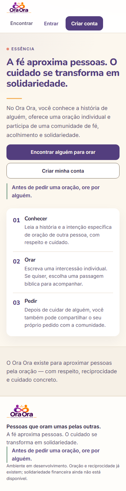
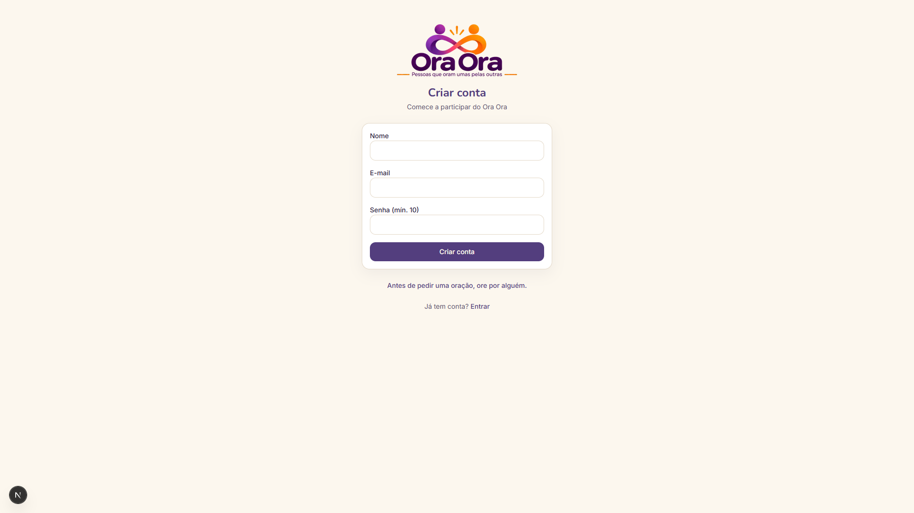

Homepage pública — desktop


Homepage pública — mobile


Login — desktop


À esquerda, captura real do UI-01. À direita, proposta UI-04. A proposta não é uma captura do aplicativo em execução.




